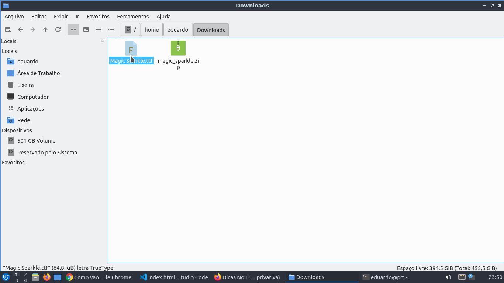
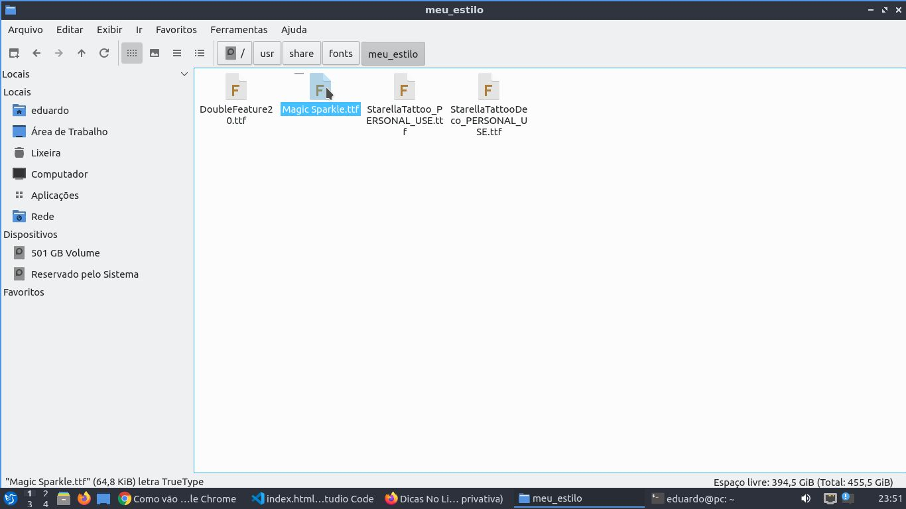

Primeiro precisamos criar uma pasta personalizada para gente dentro da pasta fonts,
no seguinte diretório /usr/share/fonts/ e em seguida configurar o dono da pasta com suas permissões.
Segundo baixamos a fonte desejada e depois descompactamos, com o botão direito do mouse escolha a opção descompactar aqui
Depois de descompactado, copiamos o arquivo da fonte para nossa pasta personalizada que criamos.
Terceiro e último precisamos executar um comando no terminal para que nossa fonte seja reconhecida pelo sistema
Qualquer dúvida você pode assistir ao meu video, para entender melhor.
VOLTAR
Copyright © 2020 3D Na Veia